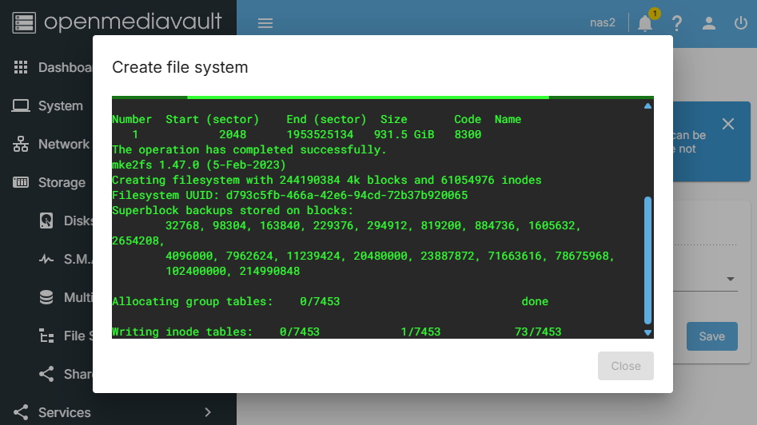
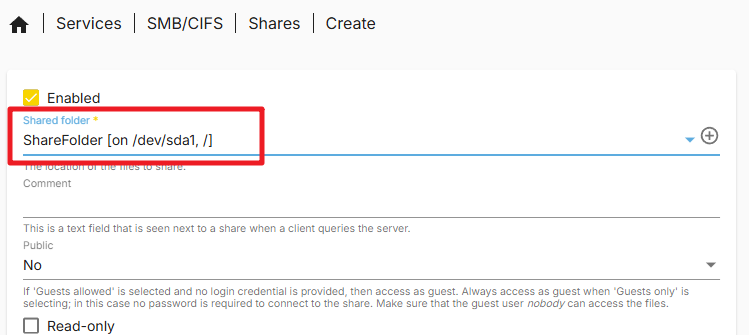
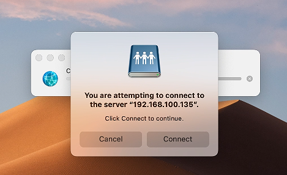

Note
您好，欢迎加入 SunFounder 的 Raspberry Pi、Arduino 和 ESP32 爱好者 Facebook 社区！与志同道合的朋友一起深入探索 Raspberry Pi、Arduino 和 ESP32 的无限可能。
为什么加入？
专家支持：在社区和官方团队的帮助下解决售后问题和技术难题。
学习与分享：交流技巧和教程，提升技能。
独家预览：抢先了解新产品发布和独家预览内容。
专属折扣：享受我们最新产品的专属优惠。
节日促销与抽奖：参与节日特别活动和抽奖。
👉 准备好一起探索与创造了吗？点击 [here] 立即加入！
配置 OpenMediaVault
Warning
OpenMediaVault 不支持 安装在带有桌面的 Raspberry Pi OS 上。
请确保您安装了正确的操作系统并已配置好网络。 安装流程与 在 Micro SD 卡上安装操作系统 相同，但在选择系统镜像时，请选择 Raspberry Pi OS Lite （位于 Raspberry Pi OS (other) 分类下）。
OpenMediaVault（简称 OMV）是一款基于 Debian Linux 的开源网络附加存储（NAS）操作系统，主要面向家庭用户和小型办公室，旨在简化存储管理，并提供丰富的网络服务功能。
请按照以下步骤，在您的 Raspberry Pi 上安装 OpenMediaVault：
1. 使用 SSH 连接到 Raspberry Pi
在终端中输入以下命令：
ssh pi@raspberrypi.local如果您使用的是 Windows 系统，可以使用 PuTTY 或其他 SSH 客户端连接到 Raspberry Pi。
2. 安装 OpenMediaVault
在终端中依次输入以下命令：
wget https://github.com/OpenMediaVault-Plugin-Developers/installScript/raw/master/install chmod +x install sudo ./install -n这将下载并运行 OpenMediaVault 的安装脚本。安装完成后请勿重启您的 Raspberry Pi。
3. 访问 OpenMediaVault
在浏览器地址栏输入以下网址访问 OpenMediaVault：
http://raspberrypi.localNote
如果无法访问上述地址，请尝试直接使用 IP 地址访问，例如：http://192.168.1.100
页面将跳转至登录界面，使用默认用户名和密码登录。默认用户名为
admin，密码为openmediavault。登录成功后，您将看到 OpenMediaVault 的主界面。
至此，您已经成功安装并访问了 OpenMediaVault，可以开始配置和管理您的存储设备了。
4. 配置 RAID（可选）
NVMe RAID 是一种结合多个 NVMe 固态硬盘（SSD）的存储解决方案，通过 RAID 技术最大化 NVMe 协议的高速性能，并提升数据冗余或读写效率。常见模式包括 RAID 0、1、5、10 等。对于双 NVMe SSD，最常见的是 RAID 0 和 RAID 1。
RAID 0（条带化）：将数据拆分为多个块并分布写入多个硬盘，从而提高读写速度。但不具备冗余保护，任意一块硬盘损坏将导致数据全部丢失。
RAID 1（镜像）：将相同数据复制到多个硬盘，实现数据冗余。其读写速度受限于单个硬盘，任意一块硬盘损坏后，其他硬盘仍可提供数据。
Note
要使用 RAID 0 或 RAID 1，至少需要挂载两块硬盘。在 RAID 0 中，RAID 卷的总容量为所有硬盘容量之和；RAID 1 中容量等于最小硬盘的容量。
在
System菜单中点击Plugins插件，搜索并安装openmediavault-md插件。在
Storage菜单中点击Disks，抹除两块 SSD。请注意，此操作将清除硬盘上的所有数据，请提前备份重要内容。
抹除模式选择
QUICK（快速）即可。进入
Multiple Device标签页，点击Create创建 RAID。在 Level 选项中选择 Stripe（RAID 0）或 Mirror（RAID 1）。在 Devices 选项中选择刚刚抹除的硬盘。点击
Save，等待 RAID 配置完成。Note
如果出现错误提示（500 - Internal Server Error），尝试重启 OMV 系统。
点击
Apply应用配置。配置完成后，需等待 RAID 状态变为
100%。
5. 配置存储
在 OpenMediaVault 主界面左侧菜单中点击 Storage，然后在页面中选择 Disks 标签页。在 Disks 页面中，您将看到所有连接到 Raspberry Pi 的磁盘，确保您的 NVMe PIP 模块已连接硬盘。
在侧边栏点击
File System选项，然后创建并挂载一个文件系统。建议选择ext4类型。选择设备并点击保存。
Note
如果您已设置 RAID，在列表中将看到 RAID 设备，直接选择它并保存即可。

系统会弹出提示窗口，表示正在创建文件系统，请稍候。
创建完成后，进入
Mount页面，选择刚刚创建的文件系统并将其挂载至 Raspberry Pi。
Note
若您使用了双硬盘，也可重复以上操作将第二块硬盘挂载至系统中。
挂载完成后请点击
Apply应用配置，此时您就可以在文件系统中查看硬盘数据了。
至此，您已成功配置 OpenMediaVault 并挂载硬盘，现在可以使用 OpenMediaVault 来管理您的存储设备了。
6. 创建共享文件夹
在
Storage（存储）页面，切换到Shared Folders（共享文件夹）标签页，点击Create（创建）按钮。
在
Create Shared Folder（创建共享文件夹）页面中，填写共享文件夹的名称，选择要共享的硬盘、共享路径，并设置文件夹权限。然后点击Save（保存）。现在您可以看到刚刚创建的共享文件夹。确认无误后点击
Apply（应用）。
您已成功创建一个共享文件夹。
7. 创建新用户
为了访问共享文件夹，我们需要创建一个新用户，请按以下步骤操作：
在
User（用户）页面点击Create（创建）按钮。
在
Create User（创建用户）页面中输入新用户的用户名和密码，然后点击Save（保存）。
您已成功创建一个新用户。
8. 设置新用户权限
在
Shared Folders（共享文件夹）页面中，点击您刚刚创建的共享文件夹，然后点击Permissions（权限）按钮。在
Permissions页面中设置用户权限，然后点击Save（保存）。完成后点击
Apply（应用）。
现在您可以使用新用户来访问共享文件夹了。
9. 配置 SMB 服务
在
Services（服务）页面中，找到SMB/CIFS>Setting（设置）标签，勾选Enable（启用），然后点击Save（保存）。点击
Apply（应用）保存配置。
进入
Shares（共享）页面，点击Create（创建）按钮。在
Create Share（创建共享）页面中，选择您要共享的文件夹路径，然后点击Save（保存）。此外，该页面中还有许多选项，可根据需要自行配置。点击
Apply（应用）。
您已成功配置 SMB 服务，现在可以使用 SMB 协议访问您的共享文件夹。
10. 在 Windows 上访问共享文件夹
打开
此电脑（This PC），点击上方的映射网络驱动器（Map network drive）。在弹出的对话框中，在
文件夹（Folder）输入框中填入 Raspberry Pi 的 IP 地址，例如\\192.168.1.100\，或使用主机名，例如\\pi.local\。
点击浏览按钮，选择您要访问的共享文件夹。在此过程中，您需要输入之前创建的用户名和密码。

勾选 “登录时重新连接（Reconnect at sign-in）”，然后点击
完成（Finish）。
现在，您可以访问 NAS 共享文件夹了。

11. 在 Mac 上访问共享文件夹
在
前往（Go）菜单中，点击连接服务器（Connect to Server）。
在弹出的对话框中输入 Raspberry Pi 的 IP 地址，例如
smb://192.168.1.100，或输入主机名，例如smb://pi.local。点击
连接（Connect）按钮。在弹出的窗口中输入您之前创建的用户名和密码，然后点击
连接（Connect）。
现在您已成功访问 NAS 共享文件夹。